APPLICATION: automated optimization for microscopy
Odalric-Ambrym Maillard
HORIBA
April 22, 2025

Roadmap
A study of the application article
"A Machine Learning Approach for Online Automated Optimization of Super-Resolution Optical Microscopy",
by Durand, A., Wiesner, T., Gardner, M.A., Robitaille, L.É., Bilodeau, A., Gagné, C., De Koninck, P. and Lavoie-Cardinal, F.
in Nature communications, 2018.
- Super-resolution Microscopy
- Optimization challenge
- A first, controlled experiment: single parameter, single objective.
- Controlled experimental setup
- Area of interest
- Default grid-search strategy
- Grid-search vs Kernel-TS
- Adaptation to custom expert assessment
- From single to multiple objective and parameters
- Optimization for novel treatments
- From expert to automated annotation
Introduction – The Challenge of Super-Resolution Microscopy
- ✅ Super-resolution microscopy breaks the diffraction limit, allowing nanoscale imaging.
- ✅ STED and RESOLFT techniques are widely used for live-cell and multimodal imaging.
- ⚠️ However, increasing complexity in parameter tuning makes it hard to use efficiently.
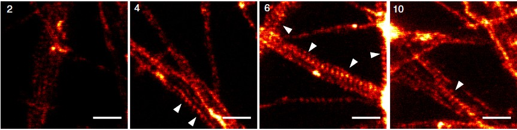
The Need for Automation
Super-resolution imaging involves many
- Laser power (
excitation & depletion) - Pixel size & scanning speed
- Detector gating & illumination scheme
Each setting affects multiple
- ✅ Improve resolution & signal-to-noise ratio (SNR)
- ❌ Reduce photobleaching, light exposure, & imaging time
The Need for Automation
Quality assessed with several measurements per image:
- ✅ Autocorrelation amplitude \( \phi_0 \)
- 📉 Photobleaching \( \phi_1 \)
- 🔊 Signal-to-Noise Ratio (SNR) \( \phi_2 \)
- 🔬 Fourier Ring Correlation (FRC) \( \phi_3 \)
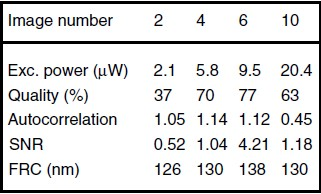
Pb 1 : optimize Autocorrelation.
Pb 2: Optimize more elaborate Quality score
🔍 Challenge: How to find the best trade-off in few optimization shots?
Problem Setup: Parameter Optimization in Imaging
We consider an optimization problem where:
- 🎛 Parameter values = Actions \(a_t \in \mathcal{A}\) of the bandit (laser power settings)
- 📈 Objective function = A real-valued score \(r_t\) to be maximized (autocorrelation score)
- 🎲 Uncertainty: The effect of the parameter on the objective is stochastic.
Learn and improve imaging parameters
💡 Goal: Find the best parameter values efficiently using online optimization.
Bandit Formulation
Each imaging attempt corresponds to a multi-armed bandit problem:
- Actions: \( \mathcal{A} = \{ a_1, a_2, \dots, a_{12} \} \)
- Stochastic reward function: \( r_t = \phi_0(a_t) + \epsilon_t \)
- Goal: Maximize cumulative reward over \(T\) trials
Regret: Gap between chosen actions and optimal actions
\[ R_T = \sum_{t=1}^{T} (r^* - r_t) \]
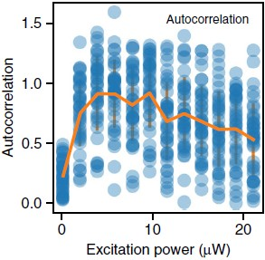
💡 Key insight: Instead of a single best action, multiple actions (4 of 12) are near-optimal.
🧪 Experimental methodology: Replay Method
To test the benefit of the bandit method, we first build an
- Fixed dataset: \( 39 \times 12 \) pre-acquired images \((s_i, a_j)\)
- 12 actions: 12 excitation power values \( a_j \)
- 39 samples per action: Mimicking biological variability
Evaluation by replay: We simulate new acquisitions by resampling from pre-acquired images
One run consists in a sequence of \(T=60\) images acquisitions, simulated one by one.
💡 In this first experiment, only autocorrelation is used to compute the reward.
🔍 Comparison: Kernel TS vs. Grid Search
Grid Search (GS) Approach
- Pure exploration: Exhaustively tests all 12 actions, one by one.
- No adaptation to previous results
- Inefficient for large parameter spaces
Kernel Thompson Sampling (Kernel TS)
- Bayesian bandit approach: Learns from past actions
- Balances exploration vs. exploitation at each step
- Efficiently converges to high-reward actions
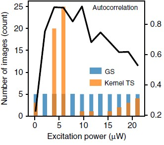
💡 Why use online optimization? Grid Search wastes samples, whereas Kernel TS adapts dynamically.
📊 Regret Definition in Imaging Optimization
Cumulative regret measures inefficiency:
\[ R_T = \sum_{t=1}^{T} \max_{a \in \mathcal{A}_{\text{opt}}} \phi_0(a) - \phi_0(a_t) \]
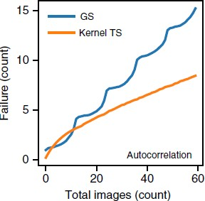 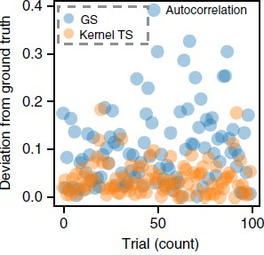
- Here, \( \mathcal{A}_{\text{opt}} \) contains 4 optimal actions instead of a single one.
- Practical interpretation: How much image quality is lost by not choosing an optimal excitation power?
💡 Online optimization minimizes regret over time, unlike naive exploration.
Adaptation to Custom Expert assessment
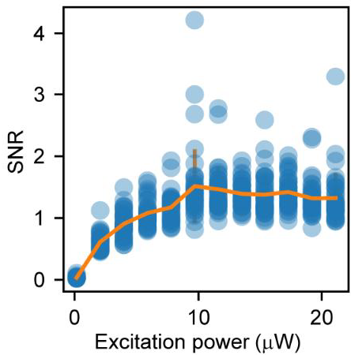 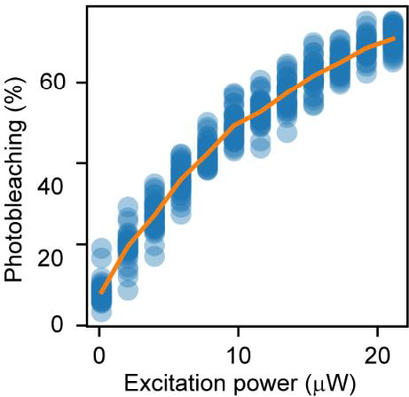 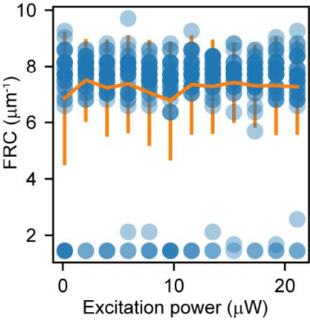 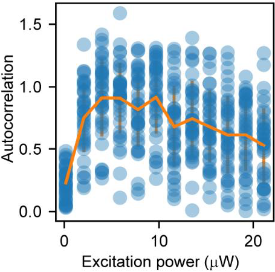
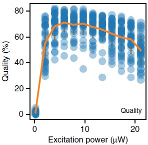 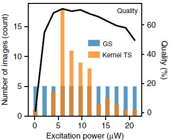 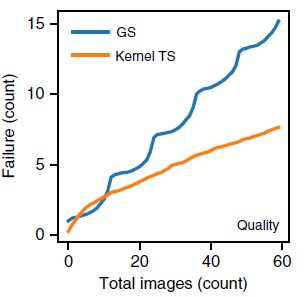
From single to multiple objective and parameters
(i) independent instances of Kernel TS to model each objective function
(ii) letting an expert provide feedback about its preference articulation among objectives
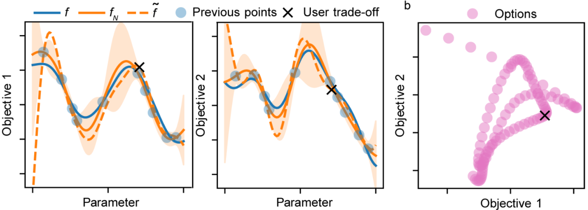From single to multiple objective and parameters
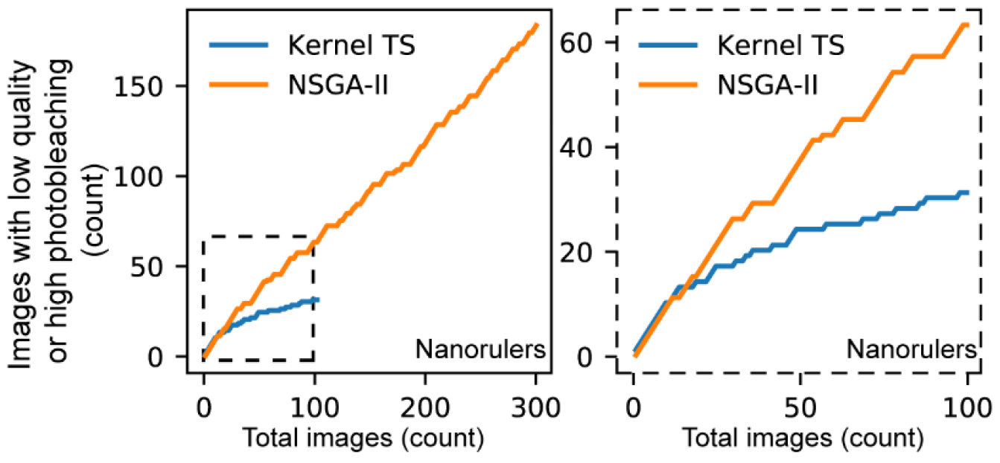
Optimization for novel treatments
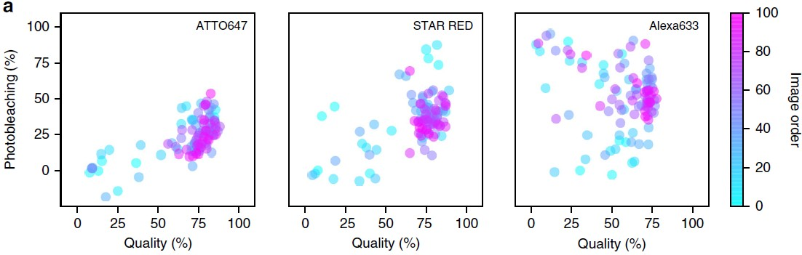
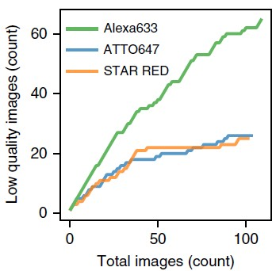 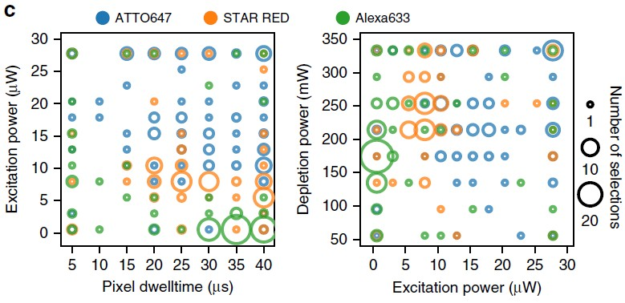
Optimization in a noisier context
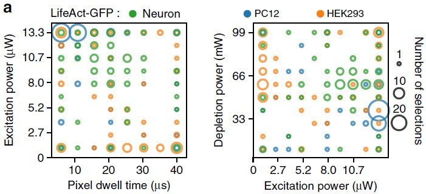 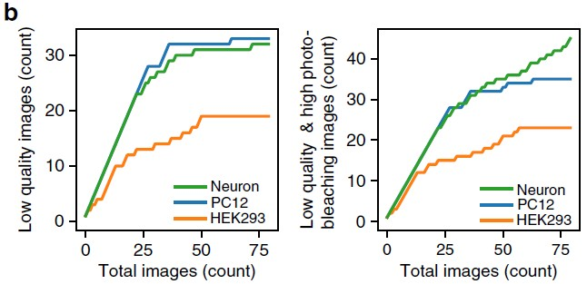
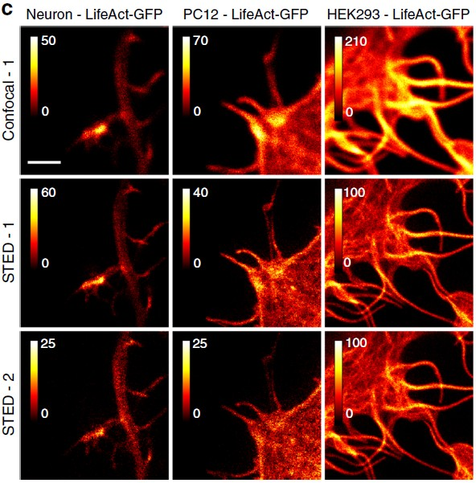
Automating annotation
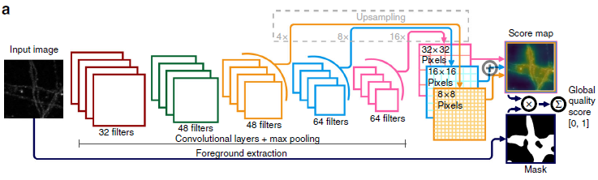
Automating preference
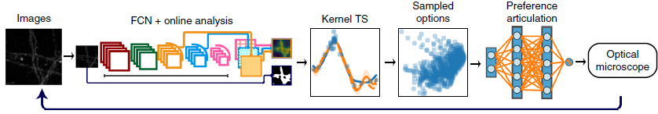